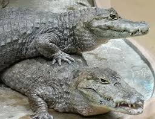

 El caimán es un reptil semiacuático que puede llegar a medir más de 2 metros de largo. Su cuerpo es alargado, con una piel escamosa y una poderosa mandíbula.
Vive en ríos, pantanos, lagos y zonas inundables de agua dulce. Es más activo durante la noche, cuando sale a cazar.
Los caimanes cumplen una función ecológica importante al mantener el equilibrio en los ecosistemas acuáticos controlando poblaciones de peces y otros animales.
DATO CURIOSO: A pesar de su apariencia feroz, los caimanes suelen evitar el contacto con los humanos. Algunas especies están protegidas debido a la caza y la pérdida de hábitat.